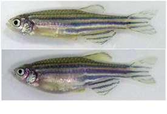
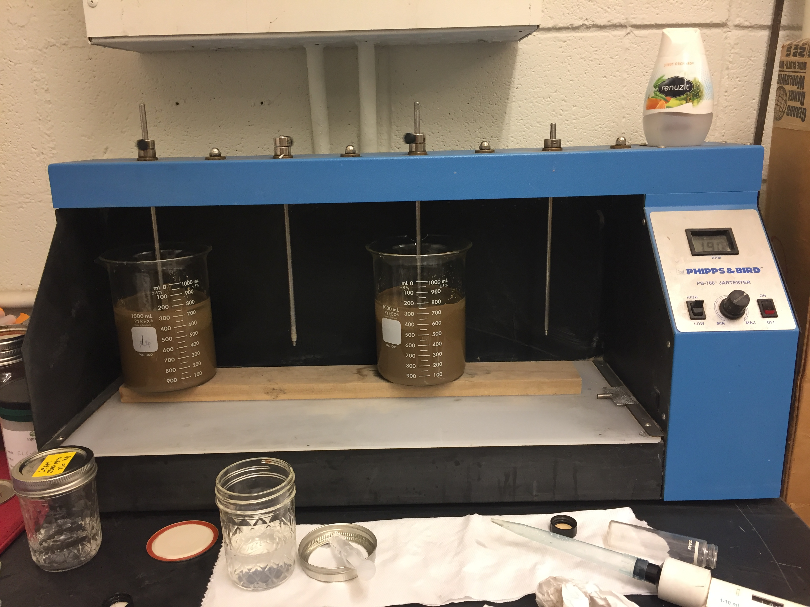
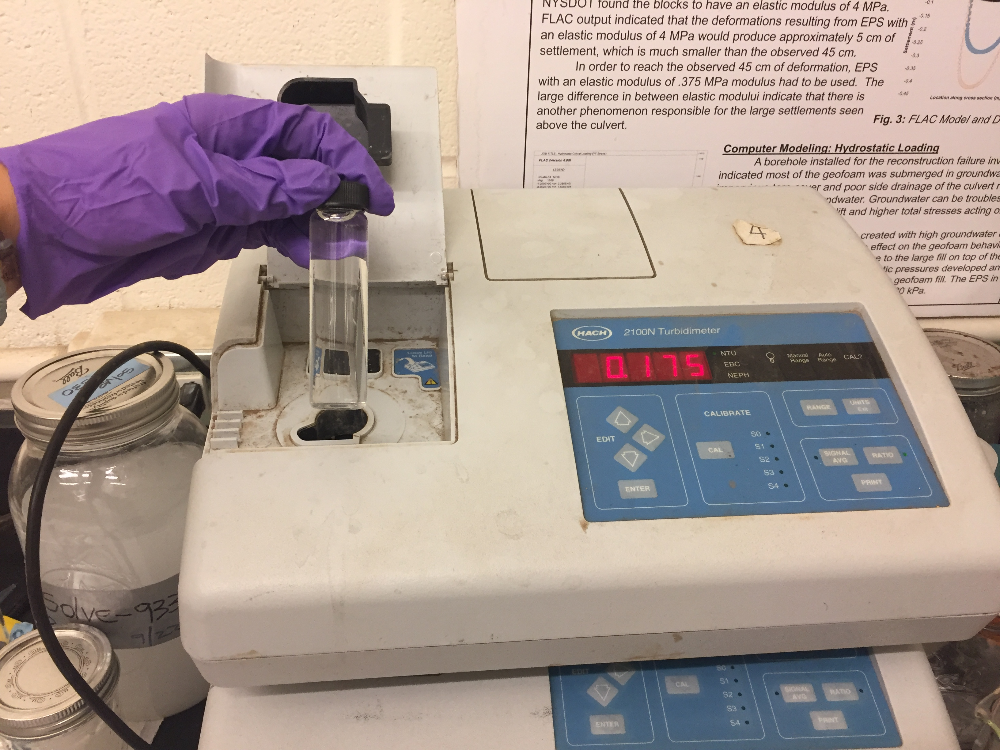
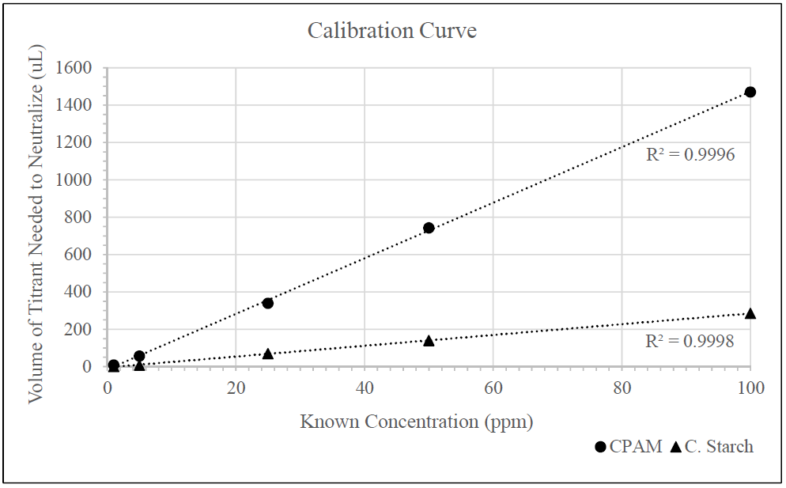
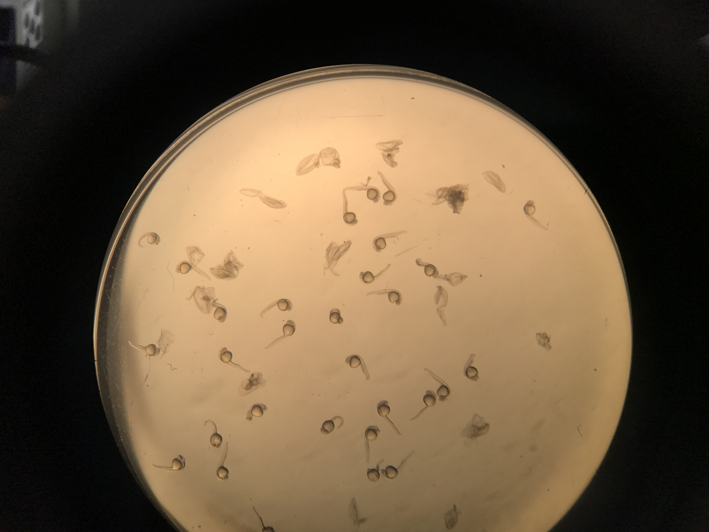
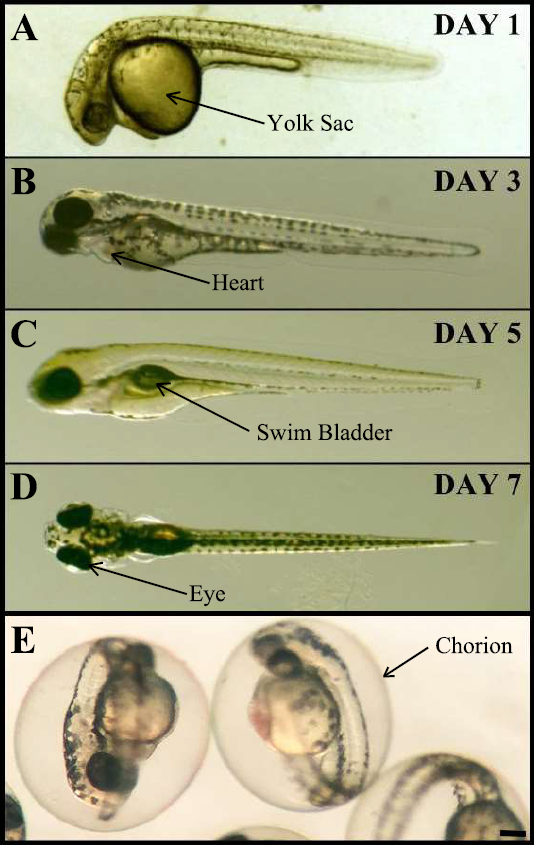
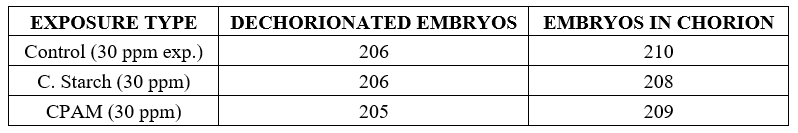

Materials & Methods
Sediments
“Tully Coarse” and “Tully Fine”
The sediments used for this study were obtained from Clarks Gravel Pit in Tully, New York. The sample was dry sieved through a No 200 standard sieve; anything passing was considered “Tully Fine” while anything retained on Sieve No. 200 was considered “Tully Coarse.” The specific gravity of the Tully soil was measured as 2.65.
Polymers
Cationic Polyacrylamide:
Commercially available polymer flocculant commonly used in geotextile tube dewatering applications. Results in large floccs. Easy to produce and relatively low cost.

Cationic Starch:
Potential environmentally friendly alternative. Results in smaller floccs compared to CPAM. More difficult to produce (takes longer and requires more ingredients).

Zebrafish Embryos
Zebrafish:
Danio rerio (zebrafish) are a commonly used vertebrate model system for toxicology studies. Zebrafish embryos are an ethical choice for these studies because the National Institutes of Health (NIH) have established that they are unlikely to be capable of experiencing suffering or distress before they are 8 days old (NIH and ARAC 2016).

Phenotypes:
Types of Phenotypes (see photo below)
- HE = heart edema (photo A)
- TE = trunk edema (photo B)
- BE = whole body edema (photo C)
- NT = necrotic tissue (photo D)
- Normal embryo (top) and embryo without a swim bladder (bottom) (photo E)

The numbers of embryos that had died were combined with the number of embryos with obvious lethal phenotypes at 7 dpf to estimate the lethality of each chemical.
Optimum Dose (Jar Test)
A series of jar tests were performed to determine the optimum dose of both CPAM and C. Starch (ASTM D2035, 2003). Small increments of polymer (0.2 mL for sand and 1 mL for fines) were added to the mixture, followed by a minute of mixing and a minute and a half of settling.

A sample of the supernatant was obtained using a 10-mL pipette, and used to check the turbidity (HACH 2100N Turbidimeter). Polymer was added in increments until a turbidity of < 20 NTU was reached, and this was considered optimum dose.

Residual Polymer Concentration
Residual polymer calibration curves were created and used to determine residual polymer concentration per the streaming current detection method as presented by Bhatia et al. (2014). Soil and water mixture samples were treated with optimum dose (results from previous method outline in section above) and a 50% overdose of each polymer, and the concentration of residual polymer was measured. A 50% overdose is more extreme than is likely to occur in the field, so providing an upper limit of possible residual polymer. This was selected as a starting point in the chance that it resulted in no residual polymer, then no further testing would be needed.
After treatment, mixing, and settling, a 10-mL sample of the supernatant was collected and immediately transferred to the streaming current detector. The piston was run for 15 minutes to allow time for the reading to stabilize. If the charge was positive, then there was residual polymer present and the KPVS titrant was added in increments to neutralize the sample (i.e., bring the charge to 0). The concentration of residual polymer in the supernatant sample was obtained from the calibration curve(s) as the concentration associated with the volume of titrant needed to neutralize the sample.

Chemical Exposure of Embryos
Groups of 30 embryos were sorted into small petri dishes. Three mL of embryo medium (EM) (control), 30 ppm CPAM in EM, or 30 ppm C. Starch in EM was added to each dish. Each experiment contained both control and experimental dishes of embryos obtained from the same parent pair.
Previous preliminary experiments had suggested that the polymers might stick to the chorion (clear egg shell) that surrounds early stage zebrafish embryos. Therefore, in some dishes the chorions were manually removed at 24 hpf. The chorions were left in the dish so as not to remove any polymer that might be stuck to the chorions (see photo below). Embryos were not dechorionated until 24 hpf because it is possible to damage embryos when dechorionating before this time point. However, dechorionating zebrafish embryos after 24 hours does not damage them and has no effect on their development. As only some aquatic species have an egg shell/chorion, dechorionating some embryos is also a more effective method to test whether these chemicals might be toxic to aquatic animals that lack this protective outer covering.

The photo below shows examples of healthy zebrafish embryos at 1, 3, 5, and 7 dpf. Healthy embryos develop normal swim bladders by 5 dpf (e.g., Figure 6). In past experience, embryos with normal morphology and swim bladders usually survive to adulthood.

Data Observation & Analysis
Embryos were examined daily using a stereoscope. Obvious morphological phenotypes were noted, and dead embryos were removed. Death was determined by the absence of a heartbeat (2 dpf and older) or extensive necrosis. The numbers of embryos that had died were combined with the number of embryos with obvious lethal phenotypes at 7 dpf, to estimate the lethality of each chemical. Phenotypes that were classified as lethal were heart edema, severe body edema, lack of a swim bladder, and extensive necrosis. The swim bladder is used to maintain buoyancy (lateral stability), and lack of a swim bladder is a lethal phenotype. If three or more embryos died or had a lethal phenotype in any individual control dish, then all the data from that experiment was not considered further, in case that batch of embryos was sick or otherwise compromised.
For all experimental conditions (i.e., control, 30ppm CPAM, 30ppm C. Starch), individual experiments were conducted on at least three different days, on both embryos in their chorions and embryos dechorionated at 24 hpf, and at least 7 dishes were treated for each condition. Each experimental condition was compared to its own control dishes, developed in EM alone, that contained embryos from the same parent fish as the respective experimental dishes.
Total number of embryos in their chorions and embryos dechorionated at 24 hpf exposed for each experimental condition. 